How to compute RSAM data
Contents
1. Introduction
Computing rsam data from waveform objects is easy to do with the waveform2rsam method. But waveform objects are generally no more than 1 hour long. So what if you want to compute RSAM data for days, weeks or months of waveform data? How do we set this up?
This is where we use "IceWeb", an application originally written in 1998 to process continuous waveform data into a variety of products for volcano observatory web pages, to aid rapid recognition of anomalous activity. Since we only want RSAM data in this case, we will drive this using iceweb.rsam_wrapper. To get help on this, use:
help iceweb.rsam_wrapper
RSAM data will be saved to binary "BOB" files in a directory "iceweb/rsam_data". So the final step in the tutorial will show how to load and plot these data.
The following is a fully worked example using the Sakurajima dataset for illustration.
2. Setup for the Sakurajima example
Define datasource - where to get waveform data from
datasourceObject = datasource('antelope', '/raid/data/sakurajima/db');
We can't process more than 1 day of waveform data at a time, so we have to 'gulp it down' in non-overlapping timewindows of size 'gulpMinutes'. Experiments suggest 60 minutes is ideal, minimum 10 minutes, maximum 120 minutes.
gulpMinutes = 60;
RSAM data is traditionally computed with a sampling interval of 60 sec, with each RSAM value being the mean absolute value of the waveform data in a 60 sec window starting at that time. But with GISMO's implementation of RSAM, we can compute multiple RSAM datasets from the same waveform data, using different statistical measures and sampling intervals. We will compute: 1. traditional rsam: mean absolute value of 60-sec time windows 2. max absolute values of 10-sec time windows - great for highlighting events 3. median absolute values of 600-sec time windows - great for highlighting tremor
measures = {'mean';'max';'median'};
samplingIntervalSeconds = [60 10 600];
3. Days with data from SAKA only: 21-23 May 2015
Set up the list of network/station/location/channel combinations
SAKA was installed on May 20, 2015, but there are lots bad data that day from people walking around and moving the seismometer. So we will start to process SAKA from May 21.
ChannelTagList = ChannelTag.array('JP','SAKA','',{'BD1';'BD2';'BD3';'HHE';'HHN';'HHZ'});
Set the start and end times
startTime = datenum(2015,5,21); endTime = datenum(2015,5,24);
Call the rsam_wrapper
iceweb.rsam_wrapper('Sakurajima', datasourceObject, ChannelTagList, ... startTime, endTime, gulpMinutes, ... samplingIntervalSeconds, measures);
Note: this may take a long time to run, e.g. 3 days of data for 6 channels might take about 15 minutes, depending on the speed of your computer and whether the data is being read across a network.
4. Days with data from SAKA and SAKB: 24 May - 7 Jun 2015
SAKB was installed on May 23, 2015, but there are lots bad data that day from people walking around and moving the seismometer. So we will add SAKB from May 24.
ChannelTagList = [ChannelTagList ChannelTag.array('JP','SAKB','',{'BD1';'BD2';'BD3';'HHE';'HHN';'HHZ'}) ]; startTime = datenum(2015,5,24); endTime = datenum(2015,6,8); iceweb.rsam_wrapper('Sakurajima', datasourceObject, ChannelTagList, ... startTime, endTime, gulpMinutes, ... samplingIntervalSeconds, measures);
Note: this may take a long time to run, e.g. 2 weeks of data for 12 channels might take about an hour, depending on the speed of your computer and whether the data is being read across a network.
5. Load RSAM data
The RSAM data computed have been stored in binary BOB files. To load these we use can loop through our channels, loading one file per channel, creating an array of RSAM objects.
s = []; year = 2015; for c=1:numel(ChannelTagList) sta = ChannelTagList(c).station(); chan = ChannelTagList(c).channel(); filepattern = fullfile('iceweb', 'rsam_data', 'SSSS.CCC.YYYY.MMMM.bob'); r = rsam.read_bob_file(filepattern, 'sta', sta, 'chan', chan, ... 'snum', datenum(2015,5,10), 'enum', datenum(2015,6,8), 'measure', 'median'); s = [s r]; end
Looking for file: iceweb/rsam_data/SAKA.BD1.2015.median.bob - found Loading data from iceweb/rsam_data/SAKA.BD1.2015.median.bob, position 1114560 to 1365120 of 3153600 mean of data loaded is 1.289008e-01 Looking for file: iceweb/rsam_data/SAKA.BD2.2015.median.bob - found Loading data from iceweb/rsam_data/SAKA.BD2.2015.median.bob, position 1114560 to 1365120 of 3153600 mean of data loaded is 2.069346e-01 Looking for file: iceweb/rsam_data/SAKA.BD3.2015.median.bob - found Loading data from iceweb/rsam_data/SAKA.BD3.2015.median.bob, position 1114560 to 1365120 of 3153600 mean of data loaded is 2.249704e-01 Looking for file: iceweb/rsam_data/SAKA.HHE.2015.median.bob - found Loading data from iceweb/rsam_data/SAKA.HHE.2015.median.bob, position 1114560 to 1365120 of 3153600 mean of data loaded is 6.861140e+01 Looking for file: iceweb/rsam_data/SAKA.HHN.2015.median.bob - found Loading data from iceweb/rsam_data/SAKA.HHN.2015.median.bob, position 1114560 to 1365120 of 3153600 mean of data loaded is 7.577006e+01 Looking for file: iceweb/rsam_data/SAKA.HHZ.2015.median.bob - found Loading data from iceweb/rsam_data/SAKA.HHZ.2015.median.bob, position 1114560 to 1365120 of 3153600 mean of data loaded is 3.774876e+01 Looking for file: iceweb/rsam_data/SAKB.BD1.2015.median.bob - found Loading data from iceweb/rsam_data/SAKB.BD1.2015.median.bob, position 1114560 to 1365120 of 3153600 mean of data loaded is 5.143686e-02 Looking for file: iceweb/rsam_data/SAKB.BD2.2015.median.bob - found Loading data from iceweb/rsam_data/SAKB.BD2.2015.median.bob, position 1114560 to 1365120 of 3153600 mean of data loaded is 5.351952e-02 Looking for file: iceweb/rsam_data/SAKB.BD3.2015.median.bob - found Loading data from iceweb/rsam_data/SAKB.BD3.2015.median.bob, position 1114560 to 1365120 of 3153600 mean of data loaded is 6.612402e-02 Looking for file: iceweb/rsam_data/SAKB.HHE.2015.median.bob - found Loading data from iceweb/rsam_data/SAKB.HHE.2015.median.bob, position 1114560 to 1365120 of 3153600 mean of data loaded is 5.791695e+01 Looking for file: iceweb/rsam_data/SAKB.HHN.2015.median.bob - found Loading data from iceweb/rsam_data/SAKB.HHN.2015.median.bob, position 1114560 to 1365120 of 3153600 mean of data loaded is 5.187206e+01 Looking for file: iceweb/rsam_data/SAKB.HHZ.2015.median.bob - found Loading data from iceweb/rsam_data/SAKB.HHZ.2015.median.bob, position 1114560 to 1365120 of 3153600 mean of data loaded is 3.458147e+01
6. Plotting RSAM data
There are two ways to plot RSAM data. The first is to use the plot method, which generates one figure per channel:
plot(s);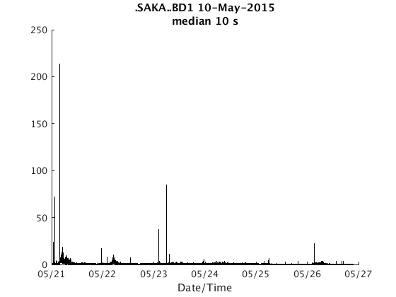 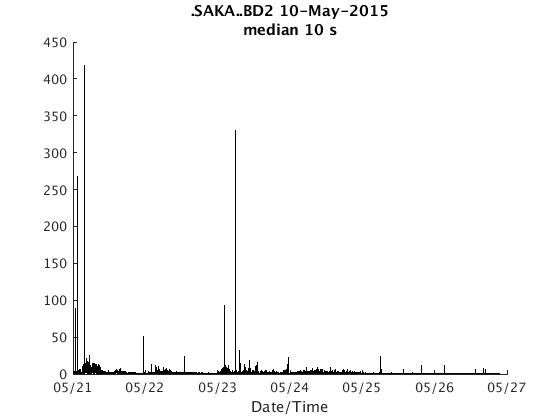 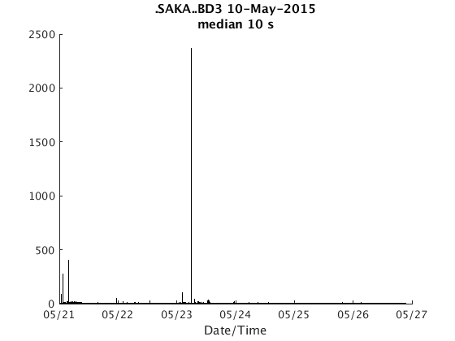 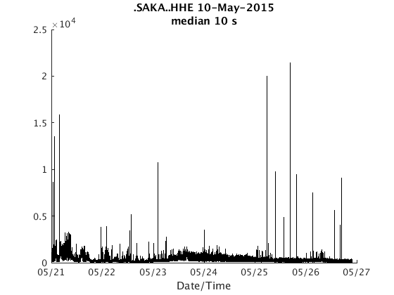 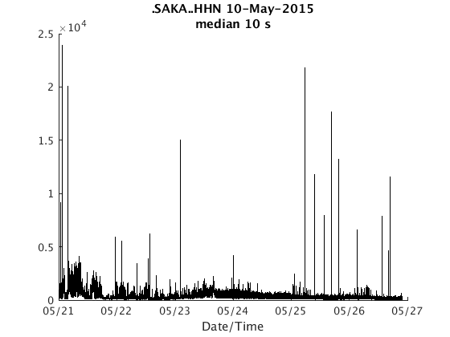 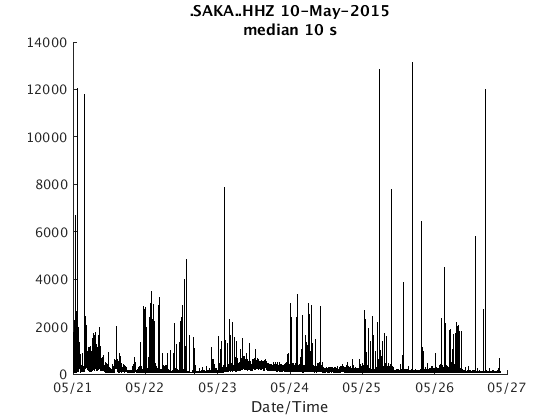 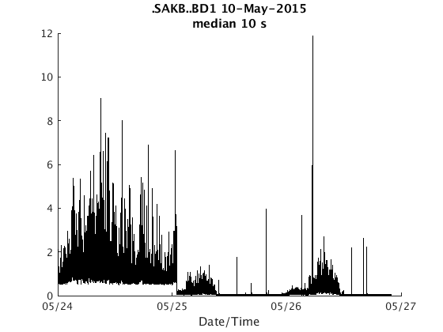 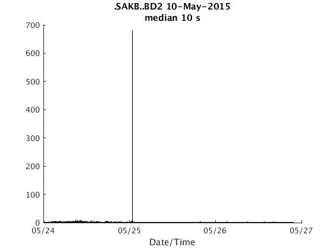 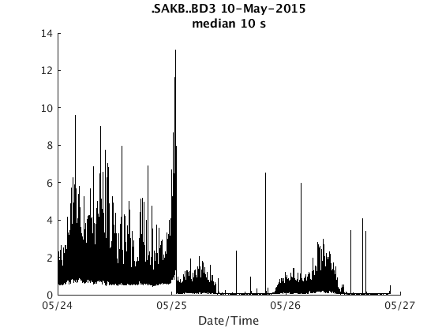
 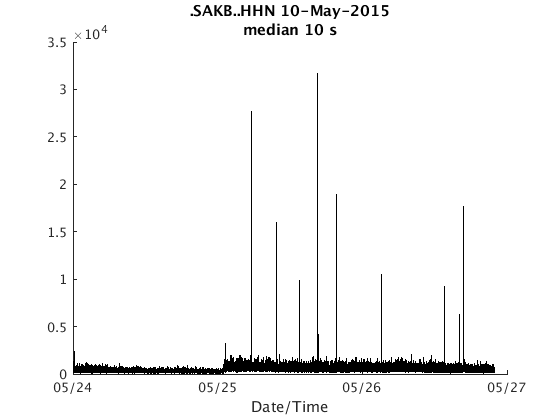 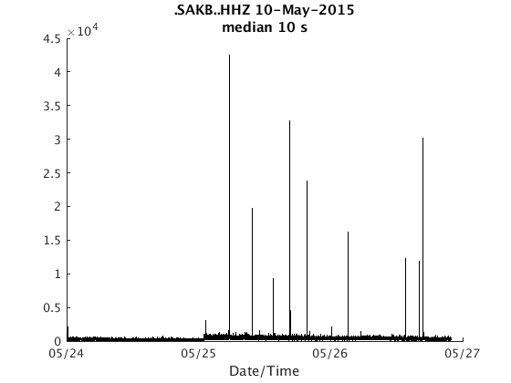
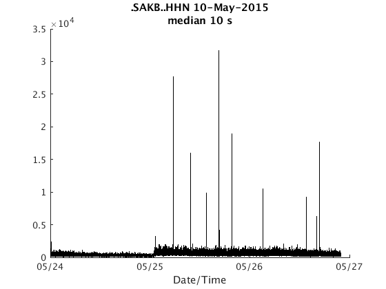 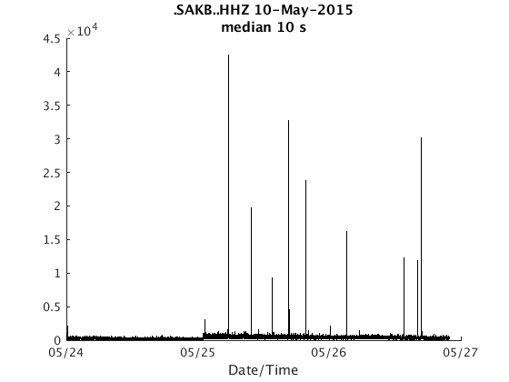 The second is plot_panels, which generates one subplot per channel:
plot_panels(s)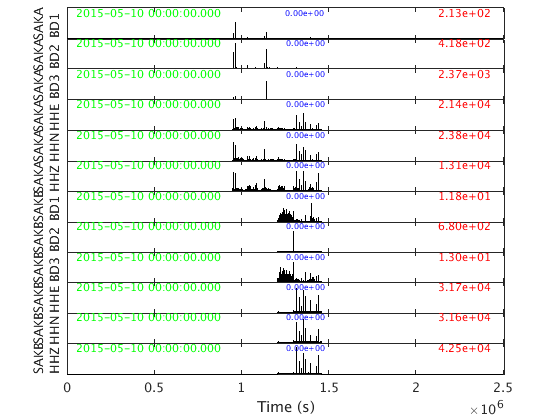
This is the end of this tutorial.